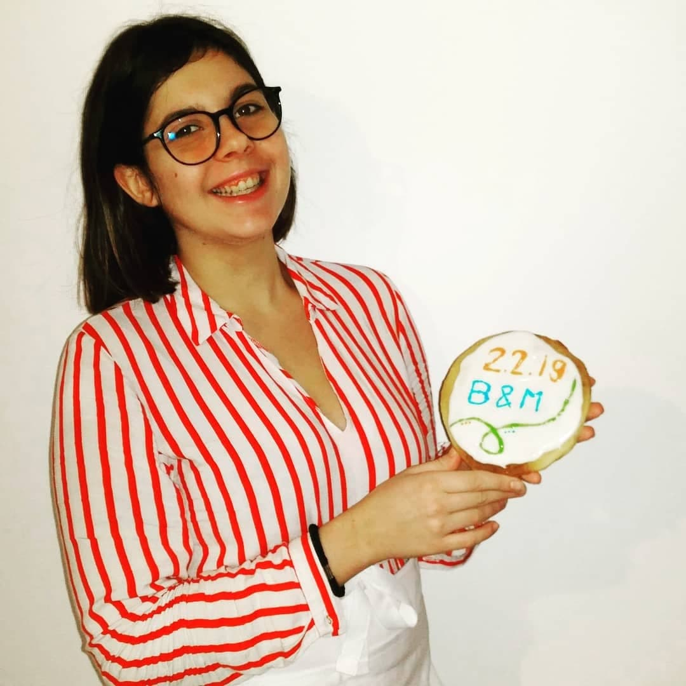
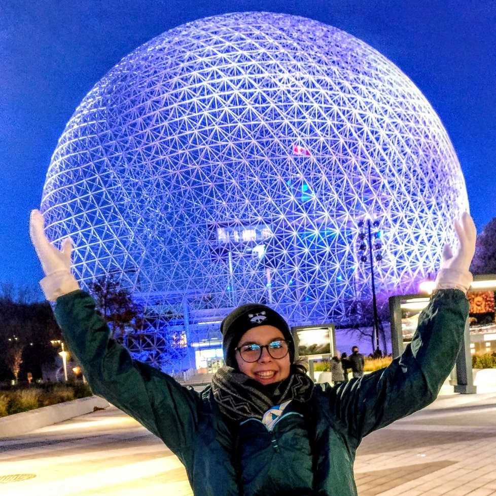
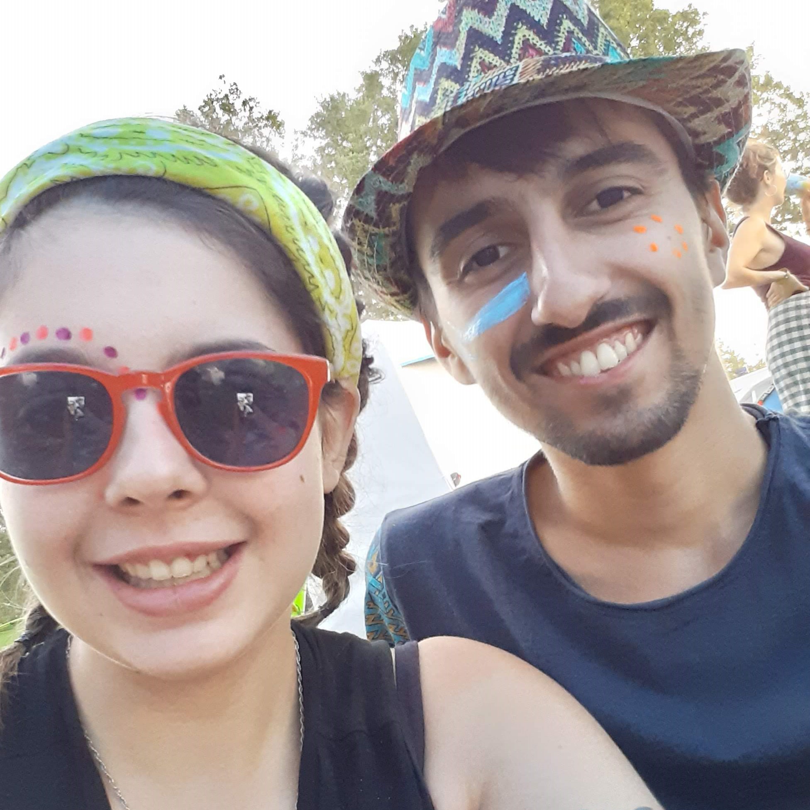
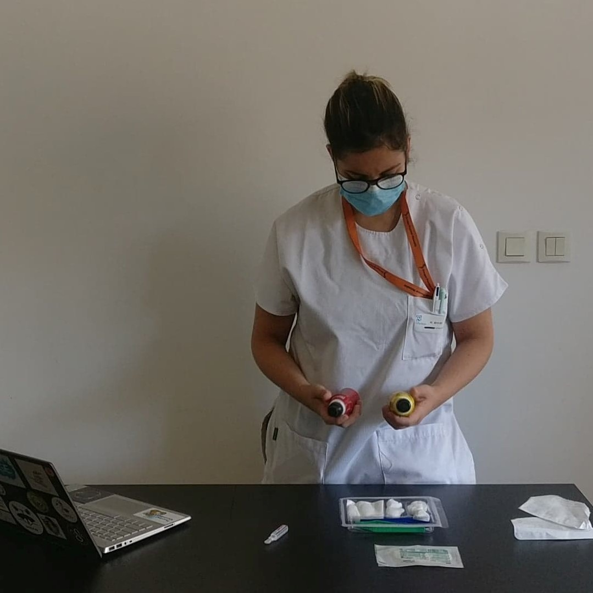

|  |  |  |  |
La patisserieUn fouet, un rouleau à pâtisser, des œufs, voila une de mes passions depuis quelques temps. J’ai pu commencer par le simple gâteau au yaourt et maintenant quelques uns de mes gâteaux font sensation le dimanche en famille. |
Les voyagesLe froid, le chaud, j’aime voyager à travers la France ou même le monde. Malgré mon peu de voyage au compteur, j’ai un gros projet, que l’on peut découvrir juste ici. |
Les festivalsArrêté pendant un an, les festivals ont pourtant rythmé mes étés avant l’arrivée de la crise sanitaire. A travers la France, je pu aller danser sous le soleil avec mes amis et beaucoup de joie. |
La création de contenuUne notion qui me tient à cœur est l’entraide, et j’ai décidé de créer un compte Instagram afin de réaliser du contenu pour aider les étudiants en soins infirmiers. Un projet en suspend, mais pourquoi ? |